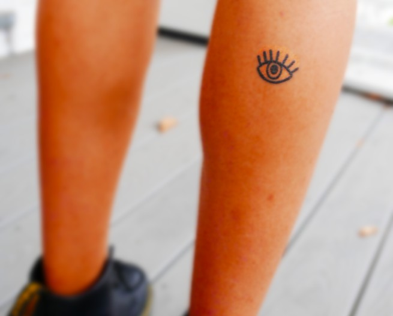

Photo and Audio by Evie Bellew
Web by Kayden Mimmack
Featured:
Becca Leviss, Carissa Fleury, Elise Sommers, Emma Coltoff, Eve Feldberg, Josh Cohen, Julien Wong, Rachel Rubinstein, Rohan Joshi, Sam Hoben, Stasia Mculsky, and Conrad Young